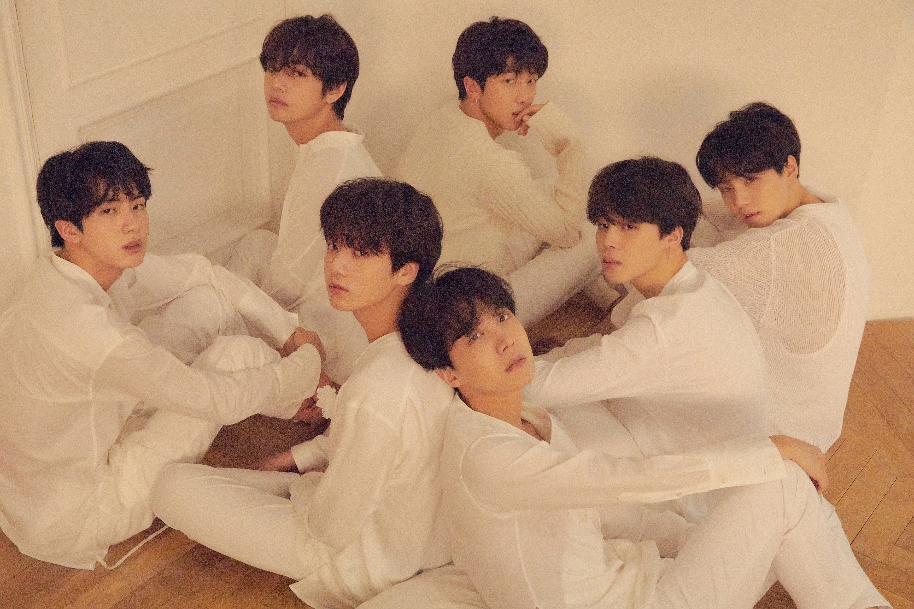
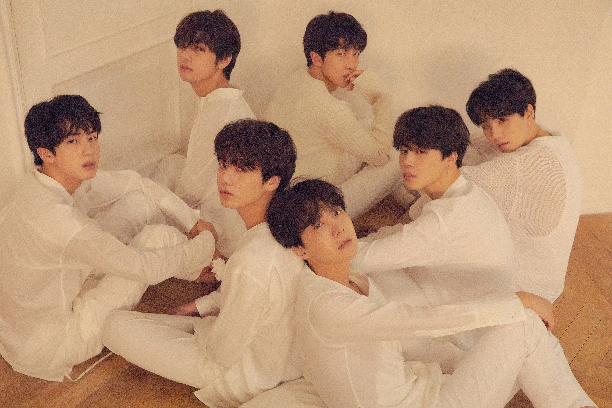

MOST POPULER
SONG POPULER
MAP OF THE SOUL OF "PERSONA"
Map of the Soul: Persona adalah album mini keenam dari grup vokal pria asal Korea Selatan BTS. Album ini direncakan akan dirilis pada tanggal 12 April 2019, oleh Big Hit Entertainment. Album ini merupakan lanjutan dari album mereka dari tahun 2018 Love Yourself: Tear dan Love Yourself: Answer,dan akan mendahului tur dunia grup ini, Love Yourself: Speak Yourself. Album ini dirilis untuk pra-pemesanan pada tanggal 13 Maret.
kembali >>>LOVE YOURSELF "ANSWER"
Love Yourself 結 'Answer' (ditulis sebagai LOVE YOURSELF 結 'Answer') adalah album kompilasi berbahasa Korea kedua dari grup vokal pria asal Korea Selatan BTS. Konsep album ini terdiri dari fitur momen pasca-putus dari membuang ego palsu dan menghadapi diri sejati.[3] Album ini dirilis pada tanggal 24 Agustus 2018 oleh Big Hit Entertainment dan akan tersedia dalam 4 versi yang berbeda: S, E, L dan F.[4] Album ini terdiri dari dua puluh lima lagu, termasuk tujuh lagu baru. Kebanyakan lagu berasal dari Love Yourself: Her, dan Love Yourself: Tear, serta beberapa lagu remiks.
LOVE YOURSELF "TEAR"
Love Yourself 轉 'Tear' (ditulis sebagai LOVE YOURSELF 轉 'Tear') adalah album studio berbahasa Korea ketiga (enam secara keseluruhan) oleh boy band asal Korea Selatan BTS. Album ini dirilis pada tanggal 18 Mei 2018 oleh Big Hit Entertainment. Album ini merupakan album penuh berbahasa Korea ketiga dari grup ini, setelah album tahun 2016, Wings.
kembali >>>
LOVE YOURSELF "HER"
Love Yourself 承 'Her' (ditulis juga sebagai LOVE YOURSELF 承 'Her') adalah album mini kelima dari grup vokal pria asal Korea Selatan BTS. Album mini ini dirilis pada tanggal 18 September 2017 oleh Big Hit Entertainment. Album ini dirilis dalam empat versi, dan berisi sembilan lagu dengan "DNA" sebagai singel utama. Selain itu, ada dua lagu tersembunyi yang hanya tersedia di album fisik.
kembali >>>
YOU NEVER WALK ALONE
Album nya yang berjudul "You Never Walk Alone".Repackage album itu maksudnya jadi album ini tuh isinya kayak melengkapi dari album sebelumnya.Kenapa disebut repackage album??.Karena di album You Never Walk Alone ini ada total 18 lagu, dimana 14 lagu lainnya sudah ada di album sebelumnya yaitu Wings.
You Never Walk Alone ini memiliki 2 lagu utama yang dipromosikan banget banget, yaitu Spring Day dan Not Today. Selain itu album You Never Walk Alone ini pun ada 2 versi yaitu versi mint sama versi pink.
kembali >>>
WINGS
Wings adalah album studio kedua dari grup vokal pria asal Korea Selatan, BTS. Album ini dirilis pada tanggal 10 Oktober 2016 dan terdiri dari 15 lagu dengan "Blood Sweat & Tears" sebagai singel pertama, dan tujuh lagu solo yang direkam oleh masing-masing anggota
The Most Beautiful Moment in Life : Young Forever
The Most Beautiful Moment in Life: Young Forever (Hangul: 화양연화 Young ForeverRR: Hwayang-yeonhwa Young Forever) adalah album kompilasi pertama dari grup penyanyi pria asal Korea Selatan, BTS. Album spesial ini dirilis pada 2 Mei 2016 dengan tiga video musik pendukung.[1][2] Album ini berisi lagu-lagu dari dua album mini mereka yang dirilis tahun 2015, The Most Beautiful Moment In Life, Part 1 dan The Most Beautiful Moment In Life, Part 2, tiga lagu tambahan dan beberapa versi remix.
kembali >>>The Most Beautiful Moment in Life : Part2
The Most Beautiful Moment in Life, Part 2 The Most Beautiful Moment In Life: On Stage pada 27-29 November yang rencananya mereka akan menyingkap singel baru mereka di sana.
kembali >>>The Most Beautiful Moment in Life : Part1
The Most Beautiful Moment in Life, Part 1 (Hangul: 화양연화 pt.1; Hwa Yang Yeon Hwa pt.1) adalah album mini ketiga dari boy band asal Korea Selatan, Bangtan Boys. Album ini dirilis dalam dua versi pada 29 April 2015[1] dan berisi 9 lagu dengan singel utama "I Need U". Pada bulan Juni, BTS mempromosikan singel kedua "Dope". Album ini dirilis menjadi dua bagian dimana Part 2 dirilis pada akhir November 2015. Ini merupakan album pertama dimana semua anggota berpatisipasi dalam pembuatan, komposisi, dan penulisan lirik lagu. Meskipun judul album menyatakan "saat yang paling indah dalam hidup" (the most beautiful moment in life), grup ini juga ingin mengungkapkan kecemasan dan ketidaknyamanan yang mungkin dihadapi anak muda. Pada suatu wawancara Mwave, para anggota grup mengatakan mereka telah meluangkan waktu lebih banyak untuk "I Need U" dibandingkan lagu utama di album-album terdahulu
kembali >>>Dark & Wild
Dark & Wild merupakan album studio pertama dari grup musik asal Korea Selatan, Bangtan Boys. Album ini berisi 14 lagu dengan "Danger" sebagai lagu utama. Grup ini kemudian mempromosikan "War of Hormone" sebagai singel kedua dari album. Di dalamnya terdapat 14 lagu dengan trek nomor 2 "Danger" diberi lingkaran merah menandakan sebagai lagu utama.BTS melakukan comeback pada tanggal 19, menampilkan "Let Me Know", "Danger", dan "War of Hormone"
kembali >>>Skool Luv Affair
Skool Luv Affair adalah album mini kedua dari grup musik asal Korea Selatan, Bangtan Boys. Album ini dirilis pada 12 Februari 2014 dan berisi 10 lagu dengan "Boy in Luv" sebagai lagu utama. Pada bulan April, grup ini mempromosikan "Just One Day" sebagai singel kedua dari album. Versi repackaged dirilis pada 14 Mei dengan tambahan dua lagu baru, yakni "Miss Right" dan "Like (좋아요)[Slow Jam Remix]".
kembali >>>O!RUL8,2?
O!RUL8,2? (dibaca Oh! Are you late, too?) adalah album mini pertama dari boy band Korea Selatan, Bangtan Boys. Album ini dirilis pada 11 September 2013 sebagai kelanjutan dari album singel 2 Cool 4 Skool. Album ini terdiri dari 10 lagu dengan "N.O" sebagai singel utama. BTS kemudian mempromosikan "The Rise of Bangtan" sebagai singel kedua album.
kembali >>>2 Cool 4 Skool
2 Cool 4 Skool adalah album single debut oleh boy band Korea Selatan BTS . Album ini dirilis pada 12 Juni 2013. [2] Album tunggal terdiri dari sembilan lagu termasuk dua lagu tersembunyi, dengan " No More Dream " sebagai lead single. Grup ini juga mempromosikan lagu lain " We Are Bulletproof Pt.2 " dari album bersama dengan single utama.
kembali >>>